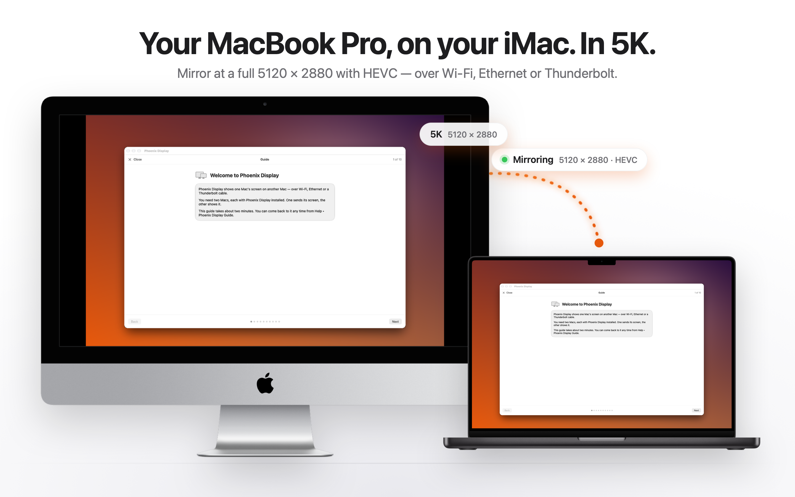
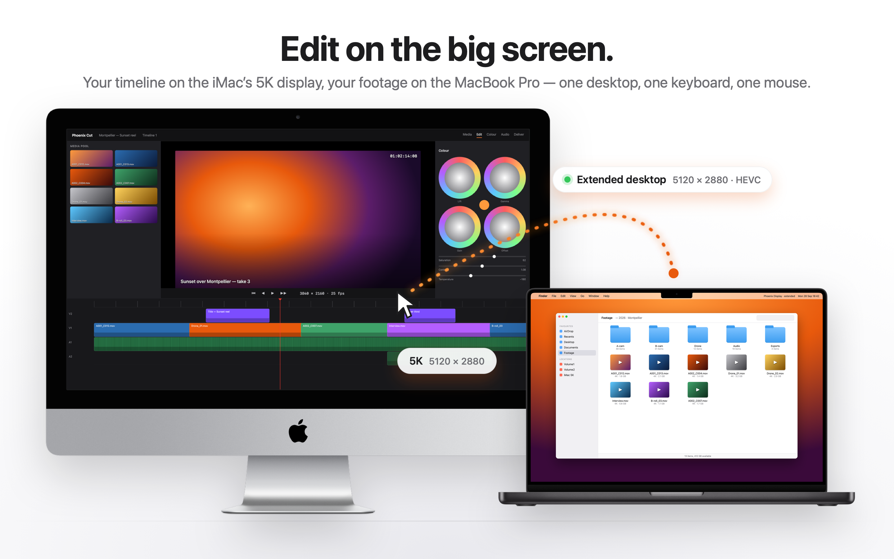

Turn your iMac into a 5K display.
Phoenix Display mirrors your MacBook Pro onto your iMac at a full 5120 × 2880 — over Wi‑Fi, Ethernet or a Thunderbolt cable.
Get it on the Mac App Store€4.99 · macOS 13 or later · one purchase, no subscription

Real 5K
Streams 5120 × 2880 with HEVC when both Macs can handle it, and falls back to H.264 when they cannot. A 2017 27‑inch iMac decodes 5K HEVC in hardware.
Any route
Automatic, or pin the stream to Wi‑Fi, Ethernet or Thunderbolt. Every link is measured live and each quality option is checked against that speed.
Works with your iMac
iMac 2017, 2019, 2020 (21.5″ and 27″) and iMac 24″ 2021 — anything running macOS 13 Ventura or later, on either end.
A guide built in
Step by step on first launch and always in Help: both Macs, permissions, connecting, the fastest route and fixes.
Edit on the big screen
With the direct‑download version you can also extend: your timeline on the iMac's 5K display, your footage on the MacBook Pro — one desktop, one keyboard, one mouse. The App Store version mirrors.

Nothing leaves your network: the picture goes straight from one Mac to the other. No account, nothing collected. Privacy policy · Support